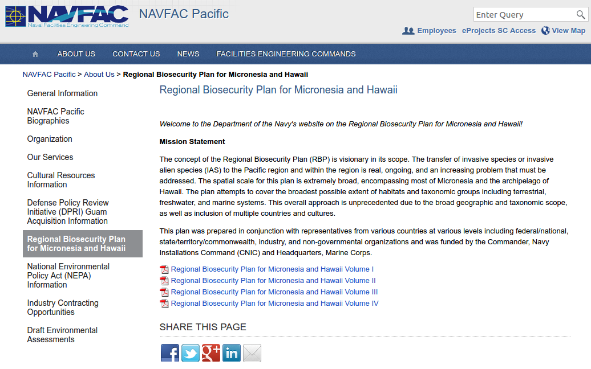
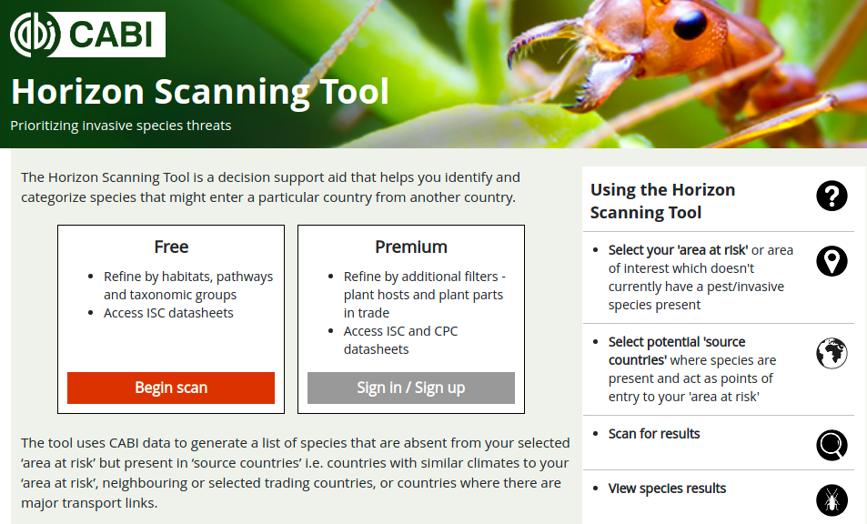
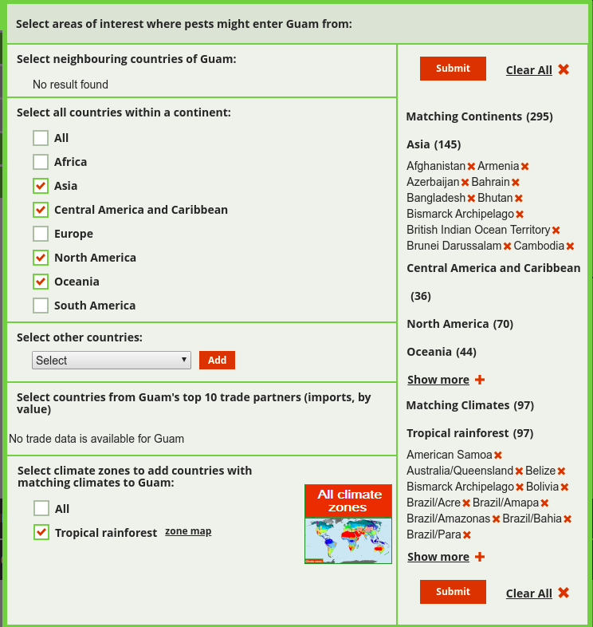
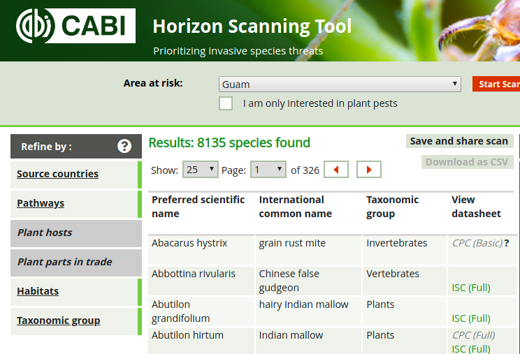
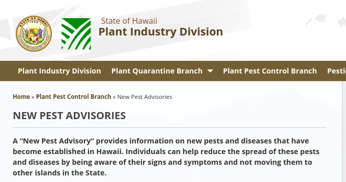

Predicting Invasive Species Arrivals on Guam
Aubrey Moore
Forestry Workshop on Invasive Insects
University of Guam, Feb. 11, 2020
#### Source 1: Regional Biosecurity Plan
NAVFAC Pacific. **Exotic Plant Pests with the Potential to be Introduced to the Micronesian Region**: Appendix A7 in Regional Biosecurity Plan for Micronesia and Hawaii Volume IV. pages A-394 to A-464. [Internet]. 2014. Available from: https://www.navfac.navy.mil/navfac_worldwide/pacific/about_us/regional-biosecurity-plan-for-micronesia-and-hawaii-.html
Source 1: Regional Biosecurity Plan

Aubrey Moore
Source 1: Regional Biosecurity Plan
- Volume 4, Appendix A, Exotic Plant Pests with the Potential to be Introduced to the Micronesian Region is a 70 page table containing a large number of species.
- Many of these species are already established on Guam.
- This data dump is of little predictive value!
Source 2: CABI Horizon Scanning Tool

Source 2: CABI Horizon Scanning Tool

Source 2: CABI Horizon Scanning Tool

Source 2: CABI Horizon Scanning Tool
- A query for Guam results yields 8,135 species.
- Many of these species are already established on Guam.
- This data dump is of little predictive value!
Source 3: Hawaii DOA New Pest Advisories
